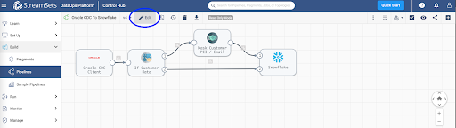

Change Data Capture (CDC) is a design pattern to determine, track, capture, and deliver changes made to enterprise data sources. These sources are typically relational databases like Oracle, MySQL, and PostgreSQL. CDC is critical because when changes occur at the source the changed data must be made available to downstream destinations like data warehouses, because decisions can't be made and analysis can't be done using stale data.
Given this critical need, let's look at how StreamSets DataOps Platform can be used to process CDC data from Oracle to Snowflake. To do this, you will build a data pipeline with StreamSets to send change data from Oracle to Snowflake. A data pipeline describes the flow of data from origin to destination systems and defines how to process the data along the way. Pipelines can access multiple types of external systems, including cloud data lakes, cloud data warehouses, and storage systems installed on-premises such as relational databases.

Prerequisites
- Access to StreamSets DataOps Platform account
- Setup Environment
- Setup Deployment with engine type Data Collector
- Once a deployment has been successfully activated, the Data Collector engine must be up and running before you can create pipelines and run jobs
- Access to Snowflake account
- Access to Oracle database
- Check versions of Oracle supported for CDC
- Complete Oracle CDC prerequisites
NOTE: As a precursor in order to migrate existing data before processing CDC records, follow the Oracle to Snowflake guided walkthrough before proceeding.
What You'll Learn
In this guide, you will learn how to process Change Data Capture (CDC) data from Oracle to Snowflake in StreamSets DataOps Platform.
To get started making a pipeline in StreamSets, download the sample pipeline from GitHub and use the Import a pipeline feature to create an instance of the pipeline in your StreamSets DataOps Platform account.
This sample pipeline includes some processors (Stream Selector and Field Masker) to show how StreamSets can help you transform data as it passes through the pipeline. They aren't necessary for a basic CDC design pattern, but are included to show such a design pattern might be extended.

Once the pipeline has been imported, open it in the pipeline canvas and select Authoring Data Collector – this is the Data Collector engine that would have been deployed once your deployment was successfully activated.


Oracle CDC Client origin will enable you to capture Create, Update, and Delete operations across various tables in your Oracle data warehouse so that your Snowflake Data Cloud can be kept in sync.
Key configuration on Oracle CDC tab for this setup:
- Set Table Name Pattern to "%" – this wildcard will capture changes across all tables in your Oracle data warehouse
- Set Dictionary Source to Online Catalog
For other configuration details such as JDBC connection string, limiting CDC operation to specific tables instead of all tables, LogMiner session window, transaction length, System change number, etc., refer to the detailed configuration section.
In StreamSets DataOps Platform, it is really easy to optionally apply any number of transformations to data while it's in motion flowing through the pipeline. Here are a couple of examples using Stream Selector and Field Masker processors.
This is an optional step and can be removed before proceding. This processor will conditionally route records based on user-defined conditions. For instance, in this case, we'd like to protect customer email addresses from being ingested (in plaintext) in Snowflake.
Key configuration on Conditions tab for this setup:
- Set Condition 1 to expression ${str:toLower(record:attribute(‘oracle.cdc. table')) == str:toLower(‘customers')} – this will route records being read from ‘customers' table through Field Masker; all other records will flow directly into Snowflake.
This is another optional processor. This processor will enable us to "mask" PII in configured fields. In this case, it is configured to mask customer email addresses before sending it over to Snowflake.
Key configuration on Mask tab for this setup: • Set Fields to Mask to /CUSTOMER_EMAIL • Set Mask Type to Custom • Set Custom Mask to XXXXXXXX
Snowflake destination uses the MERGE command to write CDC data that's being captured from Oracle. Note that this provides real-time access to data as it is written into Snowflake tables.
Key configuration on Snowflake Connection Info tab for this setup:
- Set Snowflake Region, Account, User, and PasswordNote: You can also take advantage of Snowflake Connection so these attributes can be used across multiple pipelines, shared with team members and any changes to credentials can be made in a centralized location.
Key configuration on Snowflake tab for this setup:
- Set Warehouse, Database, Schema, and TableNote: Setting Table to ${record:attribute(‘oracle.cdc.table')} will dynamically get the table name from the record header attribute generated by the Oracle CDC Client origin
- Enable Table Auto Create – this will automatically create the tables if they don't already exist in Snowflake
Key configuration on Data tab for this setup:
- Enable Processing CDC Data (Use MERGE)
- Set Table Key Columns for all the tables you'd like to capture and sync changes. For example, in this case we'd like to sync records from the following tables:
- Table: CUSTOMERS; Key Columns: CUSTOMER_ID
- Table: ORDERS; Key Columns: ORDER_ID
- Table: ORDER_ITEMS; Key Columns: ORDER_ITEM_ID, ORDER_ITEM_ ORDER_ID
For other configuration details such as Staging, Snowflake File Format, defaults for missing fields, etc. refer to the configuration section.
Click on the Edit button and update the following pipeline parameters.

Pipeline parameters to update.
- SNOWFLAKE_WH
- SNOWFLAKE_DB
- SNOWFLAKE_SCHEMA
- SNOWFLAKE_ACCOUNT
- SNOWFLAKE_USER
- SNOWFLAKE_PWD
- ORACLE_JDBC_URL
- ORACLE_JDBC_USERNAME
- ORACLE_JDBC_PASSWORD

Once you've updated the pipeline parameters, you can Validate it to make sure the credentials are correct.

Then, Preview the data to make sure the transformations are accurate.

Next, Test Run the pipeline to ensure the data is being ingested into Snowflake correctly.

Once you've successfully executed a pipeline test run you can Check In your pipeline.

You can create a job to run your pipeline. Jobs enable you to execute, manage and orchestrate data pipelines that run across multiple engines. You can increase the number of pipeline instances that run for a job, or you can enable a job for pipeline failover to minimize downtime due to unexpected failures.


For more information on jobs, refer to the documentation.
When you start a job, Control Hub sends the pipeline to the engines. The engine runs the pipeline, sending status updates and metrics back to Control Hub.
As the job runs, click the Realtime Summary tab in the monitor panel to view the real-time statistics for the job.

For more information on monitoring jobs, refer to the documentation.
You've learned how to process Change Data Capture (CDC) data from Oracle to Snowflake in StreamSets DataOps Platform.
Get up and running with StreamSets in minutes - free. Start Now.
Join our conversation at the StreamSets Community